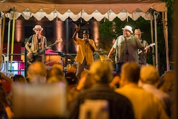

You are now approaching Laclede's Landing, a small urban historic district in St. Louis.
Walk up to the entrance of the district.
Visible from both an elevated highway and the streetscape below, Footnote is a 49-foot-tall, bright orange, blue steel, and copper spire composed of intersecting linear elements.
Laclede’s Landing is downtown St. Louis’ oldest district and only riverfront entertainment/dining destination.
Do you notice anything familiar about the sculpture?
Resembling a giant abstracted treble clef, the sculpture calls our attention to and acts as a marker to the entrance of Laclede’s Landing, a lively entertainment district on the banks of the Mississippi River.
Footnote was designed by Los Angeles-based artist Susan Cooper.
In designing this site-specific work, the artist incorporated several defining elements of the Landing and St. Louis history into an abstract three-dimensional work. These themes include the historic river and land routes that converge in St. Louis as well as its history as a jazz capital.
The piece is fabricated from copper and mild steel painted with powder coat enamel, the most durable of paint treatments.
It has a clear coat added to prevent scratches deep enough to mar the color. Reflective highway paint was used on one linear element.